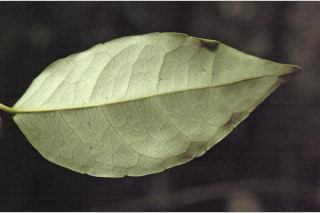
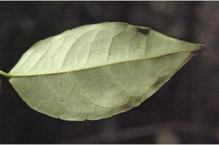
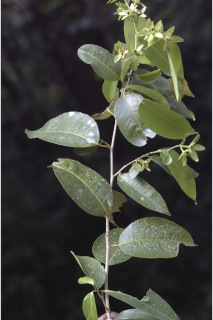
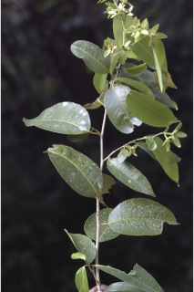

Trees up to 8 m tall.
8 ಮೀ. ಎತ್ತರದವರೆಗೆ ಬೆಳೆಯುವ ಮರಗಳು.
8 മീറ്റര് ഉയരമുള്ള മരങ്ങള്.
மரங்கள் 8 மீ. உயரம் வரை வளரக்கூடியது.
Bark greyish, minutely lenticellate; blaze orange.
ತೊಗಟೆ ಬೂದು ಬಣ್ಣದಲ್ಲಿರುತ್ತದೆ ಮತ್ತು ಅತಿ ಸೂಕ್ಷ್ಮವಾದ ವಾಯುವಿನಿಮಯ ಬೆಂಡು ರಂಧ್ರಗಳ ಸಮೇತವಿರುತ್ತದೆ; ಕಚ್ಚು ಮಾಡಿದ ಜಾಗ ಕಿತ್ತಳೆ ಬಣ್ಣದಲ್ಲಿರುತ್ತದೆ.
സൂക്ഷ്മ ശ്വസനരന്ധ്രങ്ങളുള്ള, ചാര നിറത്തിലുള്ള പുറംതൊലി; വെട്ടുപാടിന് ഓറഞ്ച് നിറമാണ്.
மரத்தின் பட்டை சாம்பல் நிறமானது, நுண்ணிய லெண்டிசெல் கொண்டது; உள்பட்டை ஆரஞ்சு நிறமானது.
Branchlets terete, glabrous.
ಕಿರುಕೊಂಬೆಗಳು ದುಂಡಾಗಿರುತ್ತವೆ ಹಾಗೂ ರೋಮರಹಿತವಾಗಿರುತ್ತವೆ.
അരോമിലമായ, ഉരുണ്ട ഉപശാഖകള്.
சிறிய நுனிக்கிளைகள் குறுக்குவெட்டுத் தோற்றத்தில் வளையமானது, உரோமங்களற்றது.
Leaves simple, alternate, spiral; stipule triangular, caducous; petiole 0.6-2 cm long, canaliculate, glabrous; lamina 6-18 x 2.3-9 cm, narrow elliptic to lanceolate, apex acuminate or acute with blunt tip, base acute to rounded, margin undulate or distantly obscurely crenulate with marginal glands at the crenatures, subcoriaceous, glabrous; secondary_nerves 6-11 pairs; tertiary_nerves broadly reticulate.
ಎಲೆಗಳು ಸರಳವಾಗಿದ್ದು ಪರ್ಯಾಯ ಮತ್ತು ಸುತ್ತು ಜೋಡನಾ ವ್ಯವಸ್ಥೆಯಲ್ಲಿರುತ್ತವೆ; ಕಾವಿನೆಲೆಗಳು ತ್ರಿಕೋನಾಕಾರದಲ್ಲಿದ್ದು ಉದುರಿಹೋಗುವಂತವು;ತೊಟ್ಟುಗಳು 0.6 - 2 ಸೆಂ.ಮೀ. ಉದ್ದವಿದ್ದು ಕಾಲುವೆಗೆರೆ ಸಮೇತವಿರುತ್ತವೆ ಹಾಗೂ ರೋಮರಹಿತವಾಗಿರುತ್ತವೆ; ಪತ್ರಗಳು 6-18 X2.3 – 9 ಸೆಂ ಮೀ. ಗಾತ್ರ, ಸಂಕುಚಿತ ಅಂಡವೃತ್ತದಿಂದ ಭರ್ಜಿಯವರೆಗಿನ ಆಕಾರ ಹೊಂದಿರುತ್ತವೆ; ಪತ್ರಗಳು ಕ್ರಮೇಣ ಚೂಪಾಗುವ ಅಥವಾ ಮೊಂಡಾದ ಅಗ್ರವುಳ್ಳ ಚೂಪು ತುದಿ ಹಾಗೂ ಚೂಪಾದುದರಿಂದ ದುಂಡಾದ ಮಾದರಿಯ ಬುಡವನ್ನು ಹೊಂದಿರುತ್ತವೆ; ಅಂಚು ತರಂಗಿತವಾಗಿರುತ್ತದೆ ಅಥವಾ ಅಸ್ಪಷ್ಟವಾದ ದುಂಡೇಣಿನ ಹಲ್ಲುಗಳ ಸಮೇತವಿರುತ್ತದೆ, ದುಂಡೇಣಿನ ಹಲ್ಲುಗಳ ಅಂಚಿನಲ್ಲಿ ರಸಗ್ರಂಥಿಗಳಿರುತ್ತವೆ;ಮೇಲ್ಮೈ ಉಪ-ತೊಗಲನ್ನೋಲುವ ಮಾದರಿಯಲ್ಲಿದ್ದು ರೋಮರಹಿತವಾಗಿರುತ್ತದೆ;ಎರಡನೇ ದರ್ಜೆಯ ನಾಳಗಳು 6 -11 ಜೋಡಿಗಳಿರುತ್ತವೆ;ಮೂರನೇ ದರ್ಜೆಯ ನಾಳಗಳು ವಿಶಾಲವಾದ ಜಾಲಬಂಧ ನಾಳ ವಿನ್ಯಾಸ ಹೊಂದಿರುತ್ತವೆ.
ലഘുവായ ഇലകള്, ഏകാന്തരമായി സര്പ്പിളക്രമത്തിലാണ്; എളുപ്പം ഇളകിപ്പോകുന്ന അനുപര്ണ്ണങ്ങള് ത്രികോണാകാരത്തിലുള്ളതാണ്; ചാലുള്ള, അരോമിലമായ ഇലഞെട്ടിന് 0.6 സെ.മീ. മുതല് 2 സെ.മീ. വരെ നീളം; പത്രഫലകത്തിന് 6 സെ.മീ മുതല് 18 സെ.മീ വരെ നീളവും 2.3 സെ.മീ മുതല് 9 സെ.മീ വരെ വീതിയും, ആകൃതി വീതി കുറഞ്ഞ ദീര്ഘവൃത്തം തൊട്ട് കുന്താകാരം വരെയാകാം, മുനപ്പില്ലാത്ത പത്രാഗ്രം നിശിതമോ ദീര്ഘമോ ആണ്, പത്രാധാരം നിശിതം തൊട്ട് വൃത്താകാരം വരെയാകാം, അരികുകള് അസമമോ ദന്ത്വങ്ങളില് ഗ്രന്ഥികളോടുകൂടിയ വിദൂരത്തിലായി ഏറെ പ്രകടമല്ലാത്ത ദന്തുരമോ ആവാം, ഉപചര്മ്മില പ്രകൃതം, അരോമിലം; 6 മുതല് 11 വരെ ജോഡി ദ്വിതീയ ഞരമ്പുകള്; വീതിയേറിയ ജാലിതമായ ത്രിതീയ ഞരമ്പുകള്.
இலைகள் தனித்தவை, மாற்றுஅடுக்கமானவை, சுழல் போல் அமைந்தது; இலையடிச்செதில் முக்கோண வடிவானது, எளிதில் உதிரக்கூடியவை; இலைக்காம்பு 0.6-2 செ.மீ. நீளமானது, குறுக்குவெட்டுத் தோற்றத்தில் கேனாலிகுலேட், உரோமங்களற்றது; இலை அலகு 6-18 X 2.3-9 செ.மீ., குறுகிய நீள்வட்டம் முதல் ஈட்டி வடிவானது, அலகின் நுனி அதிக்கூரியது அல்லது கூரியது மற்றும் மழுங்கிய முனை கொண்டது, அலகின் தளம் கூரியது முதல் வட்டமானது, அலகின் விளிம்பு அலைப்போன்றது அல்லது ஆங்காங்கே தெளிவற்ற பிறை போன்ற பற்களுடையது, பிறையின் நடுவே சுரப்பிகளுடையது, சப்கோரியேசியஸ், கீழ்பரப்பு உரோமங்களற்றது; இரண்டாம் நிலை நரம்புகள் 6-11 ஜோடிகளுடையது; மூன்றாம் நிலை நரம்புகள் அகன்ற வலைப்பின்னல் போன்றது.
Flowers unisexual, dioecious; male flowers white, in cymes; female flower solitary or 2-3 together, terminal or leaf opposed.
ಹೂಗಳು ಏಕಲಿಂಗಿಗಳಾಗಿರುತ್ತವೆ ಮತ್ತು ಗಂಡು ಮತ್ತು ಹೆಣ್ಣು ಹೂಗಳು ಒಂದೇ ಸಸ್ಯದಲ್ಲಿರುತ್ತವೆ; ಗಂಡು ಹೂಗಳು ಬಿಳಿ ಬಣ್ಣದಲ್ಲಿದ್ದು ಮಧ್ಯಾರಂಭಿ ಪುಷ್ಪ ಮಂಜರಿಯಲ್ಲಿರುತ್ತವೆ; ಹೆಣ್ಣು ಹೂಗಳು ಒಂಟಿಯಾಗಿರುತ್ತವೆ ಅಥವಾ ಎರಡರಿಂದ ಮೂರು ಹೂಗಳು ಜೊತೆಗಿರುತ್ತವೆ ಹಾಗೂ ತುದಿಯಲ್ಲಿ ಅಥವಾ ಎಲೆಗೆ ಅಭಿಮುಖಿಗಳಾಗಿರುತ್ತವೆ.
പൂക്കള് ഏകലിംഗികളാണ്, ഡയീഷ്യസും; വെളുത്ത ആണ്പൂക്കള് സൈമുകളില് ഉണ്ടാകുന്നു; പെണ് പൂക്കള് ഒറ്റക്കായോ രണ്ടോ മൂന്നോ എണ്ണം ഒന്നിച്ച ഉച്ഛസ്ഥാമായോ ഇലകള്ക്കെതിരായോ ഉണ്ടാകുന്നു.
மலர்கள் ஓர்பாலானவை, ஈரகம் கொண்டவை; ஆண்மலர்கள் வெள்ளை நிறமானவை, சைம் மஞ்சரியானவை; பெண்மலர் தனித்தவை அல்லது 2-3 மலர்கள் தண்டின் நுனியில் அல்லது இலையின் எதிரே காணப்படுபவை.
Capsule, globose, hairy, 3-lobed; fruiting_calyx 4-5 oblong-lanceolate unequal lobes; seeds 3.
ಸಂಪುಟ ಫಲಗಳು ಗೋಳಾಕಾರದಲ್ಲಿದ್ದು, ರೋಮಸಹಿತವಾಗಿರುತ್ತವೆ ಮತ್ತು 3 ಹಾಲೆಗಳ ಸಮೇತವಿರುತ್ತವೆ; ಕಾಯಿಗಳ ಪುಷ್ಪಪಾತ್ರೆಯ ದಳಗಳು 4 ರಿಂದ 5 ಇದ್ದುಅಸಮವಾಗಿರುತ್ತವೆ ಮತ್ತು ಚತರಸ್ರ-ಭರ್ಜಿಯ ಆಕಾರದಲ್ಲಿರುತ್ತವೆ ಹಾಗೂ 3 ಬೀಜಗಳನ್ನೊಳಗೊಂಡಿರುತ್ತವೆ.
3 വീതം വിത്തുകളുള്ള, രോമിലമായ, 3 ഭാഗങ്ങളുള്ള കായ, 4 ഓ 5 ഓ ആയതാകാര-കാന്താകൃതിയിലുള്ള അസമമായ ഭാഗങ്ങളുള്ള ഒട്ടിനില്ക്കുന്ന ബാഹ്യദളങ്ങളുള്ള കാപ്സ്യൂള് ആണ്.
வெடிகனி (கேப்சூல்), கோளவடிவானது, உரோமங்களுடையது, 3-அறைகளுடையது; புல்லி இதழ்கள் 4-5 கனியில் நிரந்தரமானவை, நீள்வட்டம்-ஈட்டி வடிவானது, இதழ்கள் சமமற்றவைகள்; விதைகள் 3.


 

 
